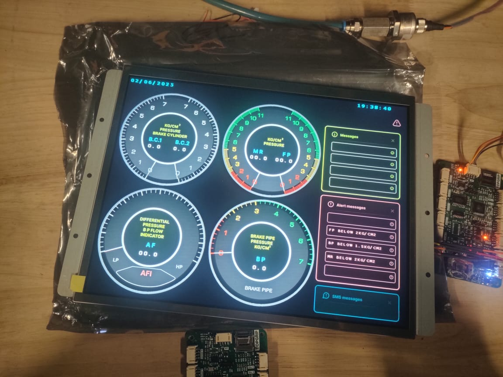

Naveen Palle
Embedded Firmware Engineer
I build reliable embedded systems for railway, medical and industrial products, with a focus on real-time performance, communication protocols and behaviour in the field.

4+years in production firmware
135 msdeterministic control loop
6CAN pressure sensors per unit
3domains: rail, medical, industrial
About
Embedded firmware developer with 4+ years of experience delivering production-grade systems. I work across firmware architecture, communication protocols and hardware integration.
I like problems that show up after deployment: network failures, memory limits and devices that must keep working without anyone nearby to reset them.
- Controllers
- STM32 (bare-metal and FreeRTOS)
- Protocols
- CAN, CAN-FD, UART, SPI, I2C, USB, BLE
- Storage
- SD card, eMMC, QSPI flash, external RAM
- UI
- Industrial HMI, TouchGFX, LVDS displays
- System work
- Bootloaders, firmware updates, fallback design
Projects
Contact
Open to embedded firmware roles and technical collaboration.
Naveengoudpalle7@gmail.com +91 98483 16639